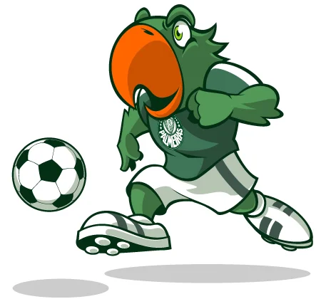
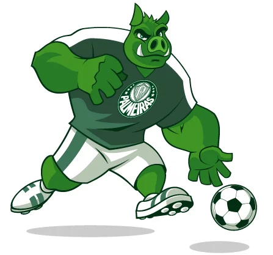

Periquito
Desde 1917O Periquito é o primeiro mascote oficial da Sociedade Esportiva Palmeiras. Adotado ainda em 1917 pelos torcedores do Palestra Italia, quando o time passou a se vestir totalmente de verde, o apelido também se origina no fato de que existiam muitas aves deste tipo nos bosques do Parque Antarctica. Os registros oficiais mais evidentes do Periquito, no entanto, apareceram nos anos 40, logo após os incidentes que fizeram com que o Brasil entrasse na Segunda Guerra Mundial e o Palestra mudasse definitivamente o seu nome para Palmeiras. Ave típica da Mata Atlântica, o Periquito ganhou força entre os torcedores e os jornalistas esportivos da época, reforçando o lema "que sabe ser brasileiro" do hino e se tornando símbolo do clube mais vitorioso do Brasil.

Porco Gobbato
Oficial desde 2016Após 30 anos de adoração pela torcida nas arquibancadas, o Porco Gobbato foi oficializado como mascote do clube em 2016, ganhando uma forma robusta e imponente e passando a animar os jogos do Verdão ao lado do Periquito. O nome faz referência a João Roberto Gobbato, diretor de marketing que era favorável à adoção definitiva do apelido já na década de 80. A origem do mascote remete à forma pejorativa pela qual os palmeirenses eram chamados pelos rivais. Após quase duas décadas sentindo-se ofendida com o apelido, a torcida decidiu adotar o mascote durante uma partida contra o Santos, pelo Brasileiro de 1986, com gritos de "E dá-lhe Porco, e dá-lhe Porco, olê, olê, olê!", acabando, assim, com as gozações. Pouco depois, naquele mesmo ano, a Revista Placar "oficializou" o mascote da torcida ao estampar em sua capa o meia Jorginho Putinatti, símbolo daquela geração, segurando um porco no colo.